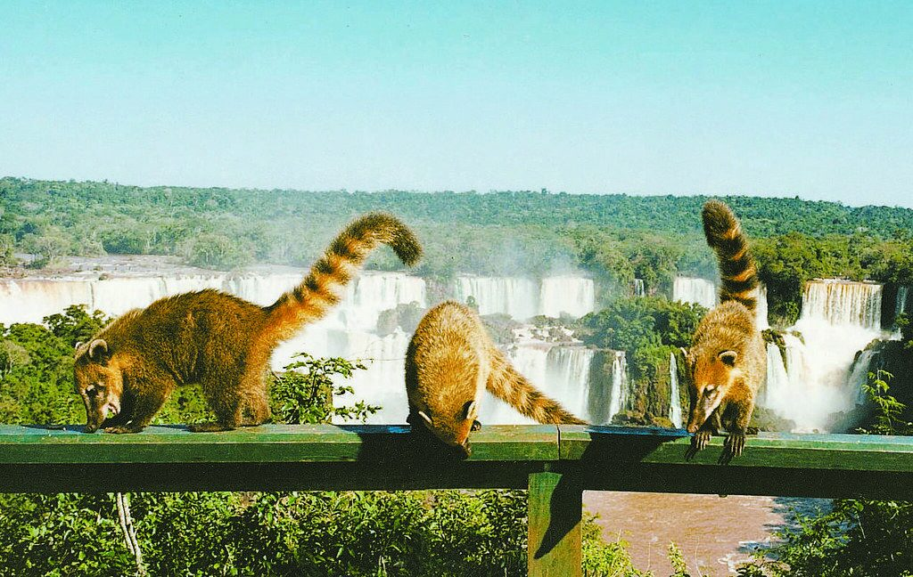

Misiones
Puerto Iguazú
Selva, agua y pasarelas accesibles. Circuitos progresivos con sombra y momentos de serenidad.
- Pasarelas accesibles del Parque Nacional Cataratas
- Hito Tres Fronteras al atardecer
Ficha de accesibilidad
RuidoMedio
AfluenciaMedio
Calma Sí
Pausas Programadas
Fechas: a confirmar
Consultar